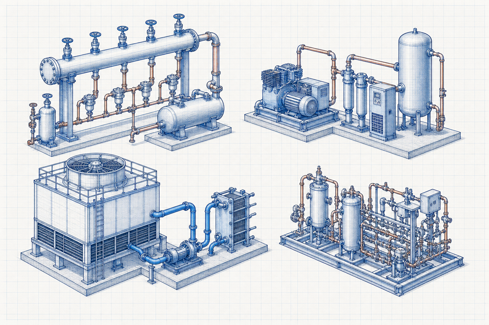

Industrial-utility process guide
Compressed Air Process Flow
Compressed Air Process Flow is an industrial process topic within Compressed Air. It explains the process purpose, major stages and operating considerations when the required duty is to generate, distribute, recover or control plant utility services for industrial operation.

- Content type
- Industrial-utility process guide
- Level
- Industrial Processes › Industrial Utility Processes › Compressed Air › Air Generation and Distribution › Compressed Air Process Flow
- Audience
- Student · Design engineer · Project engineer · Plant engineer
- Last reviewed
- 30 August 2026
What Is Compressed Air Process Flow?
Compressed Air Process Flow is an industrial process topic within Compressed Air. It explains the process purpose, major stages and operating considerations when the required duty is to generate, distribute, recover or control plant utility services for industrial operation.
Why Is It Important in Industrial Processes?
Compressed Air Process Flow must be assessed as part of the complete compressed air arrangement. The practical process result depends on the stated feed or energy basis, system boundary, equipment interfaces, operating conditions, controls and applicable project requirements.
Key Terms and Definitions
- Compressed Air Process Flow
- The specific industrial process subject defined by this page title.
- Air Generation and Distribution
- The approved topic used to organise this guide.
- Compressed Air
- The process system that establishes the immediate operating context.
- Process basis
- The declared feed, duty, conditions, interfaces and requirements used for review.
Fundamental Process Principle
Compressed Air Process Flow must be assessed as part of the complete compressed air arrangement. The practical process result depends on the stated feed or energy basis, system boundary, equipment interfaces, operating conditions, controls and applicable project requirements.
Process Basis, Symbols and Units
Applicable process relationship
Use the documented method appropriate to the actual process and service.
Compressed Air Process Flow does not have one universal equation. Select verified mass, energy, hydraulic, heat-transfer, reaction or performance relationships that match the defined process configuration.
Unit consistency
Use one declared unit system and record the basis for flow, composition, temperature, pressure, energy, dimensions and measured operating data.
Assumptions and Validity Range
- The documented process arrangement represents the actual service.
- Inputs are traceable and compatible with the declared operating condition.
- Safety, emissions, supplier, code and project requirements are reviewed separately.
Factors Affecting Process Performance
Process basis
required utility demand, service conditions, quality and operating profile
Equipment and interfaces
generation, distribution, recovery, storage, measurement and control interfaces
Project constraints
energy efficiency, safety, reliability, emissions, maintenance and regulatory requirements
Step-by-Step Process Review Method
- Define the process boundary, required duty and operating envelope for Compressed Air Process Flow.
- Collect verified process data, drawings, feed or utility information, interfaces and relevant constraints.
- Select an applicable vendor, project or standards-based method for the actual process configuration.
- Review capacity, controllability, utilities, safety, emissions and operating limits on one consistent basis.
- Obtain qualified engineering review before detailed design, modification or operation.
Illustrative Process Review
Hypothetical example — not a design calculation
A project team checks whether a process option can meet the stated duty. It verifies the basis and interfaces, applies an appropriate documented method, and evaluates the outcome against operation, safety, maintenance and environmental constraints before taking the decision forward.
Industrial Applications
- Process-basis development and preliminary review for Compressed Air Process Flow.
- Cross-discipline coordination of process, mechanical, electrical, control, civil and environmental interfaces.
- Operations, inspection, troubleshooting and maintenance planning for the assigned plant system.
Common Mistakes and Limitations
- Using a generic process description without verifying actual operating conditions.
- Ignoring process, mechanical, electrical, control, civil, safety or environmental interfaces.
- Treating an educational article as an operating procedure, final design or compliance approval.
Frequently Asked Questions
Can this page be used as a final process design basis?
No. It is educational and preliminary reference material. Final decisions need verified project data, applicable requirements, supplier information and qualified engineering review.
What should be confirmed first?
Confirm the process boundary, feed or energy basis, operating conditions, required duty, interfaces and governing requirements.
Why are related resources included?
They provide the system context needed to avoid treating one process topic as an isolated design decision.
References
- Perry, R. H. and Green, D. W. Perry’s Chemical Engineers’ Handbook. McGraw Hill.
- Babcock & Wilcox. Steam: Its Generation and Use. Babcock & Wilcox.
This is an original educational summary and does not reproduce protected book text, tables, figures or standards material.